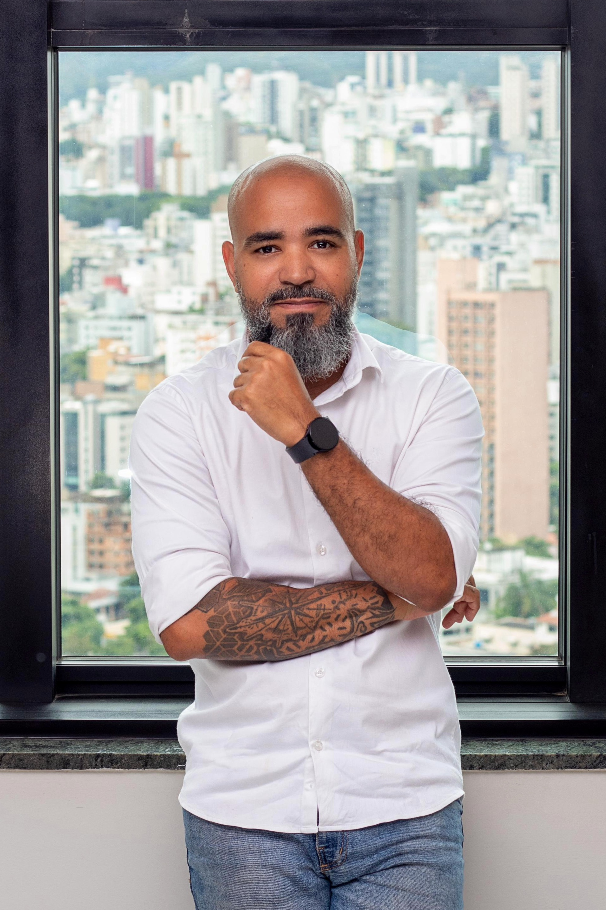

Sobre a TW
Mais do que postar, é sobre se posicionar e estruturar.
A TW nasceu para ajudar marcas e profissionais a transformarem presença em percepção, percepção em demanda e demanda em crescimento com estratégia e execução.

Tawana Madeira
Estratégia & ConteúdoEstrategista digital focada em posicionamento, conteúdo, narrativa de marca, linha editorial, auditoria de Instagram e construção de presença intencional para profissionais e empresas.

⚡Wallison Madeira
Tráfego, Tecnologia & AutomaçãoGestão de tráfego, tecnologia e automação para negócios que precisam de estrutura digital, atendimento organizado, landing pages, telefonia em nuvem, WhatsApp corporativo e integrações.